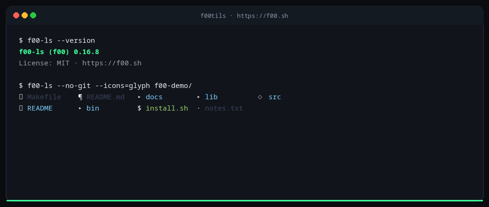
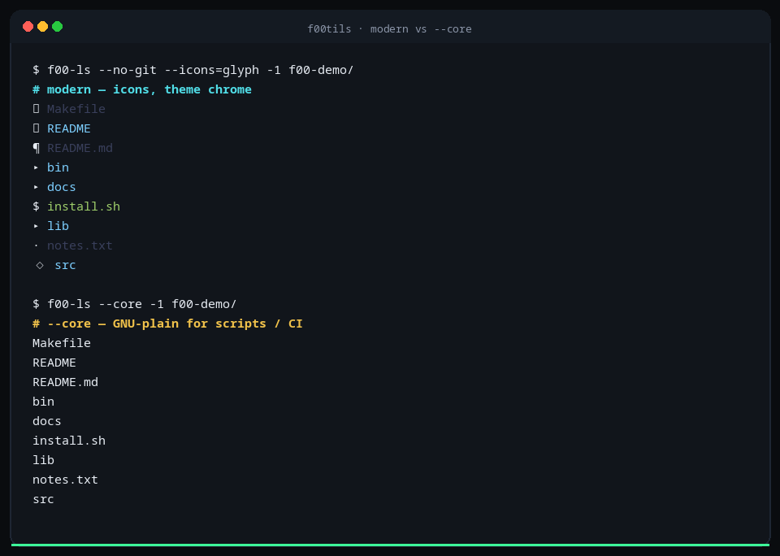
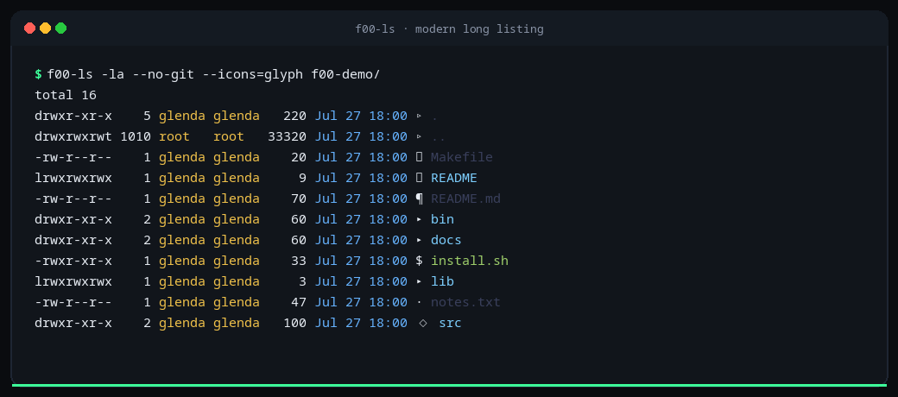
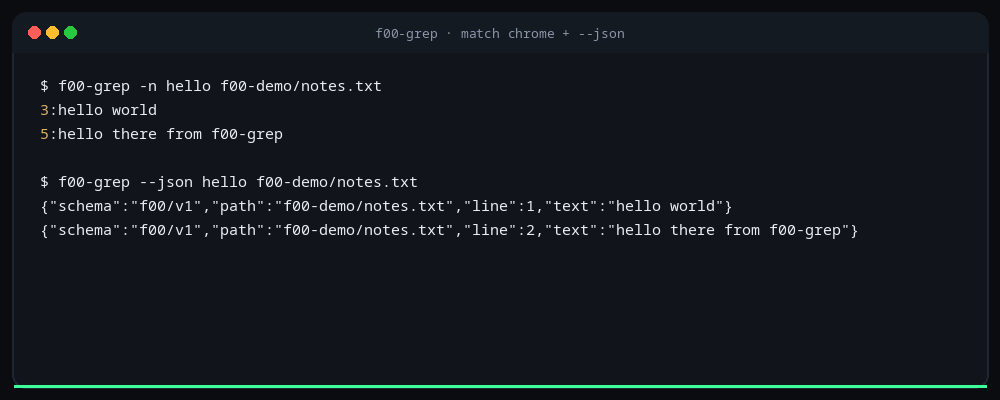
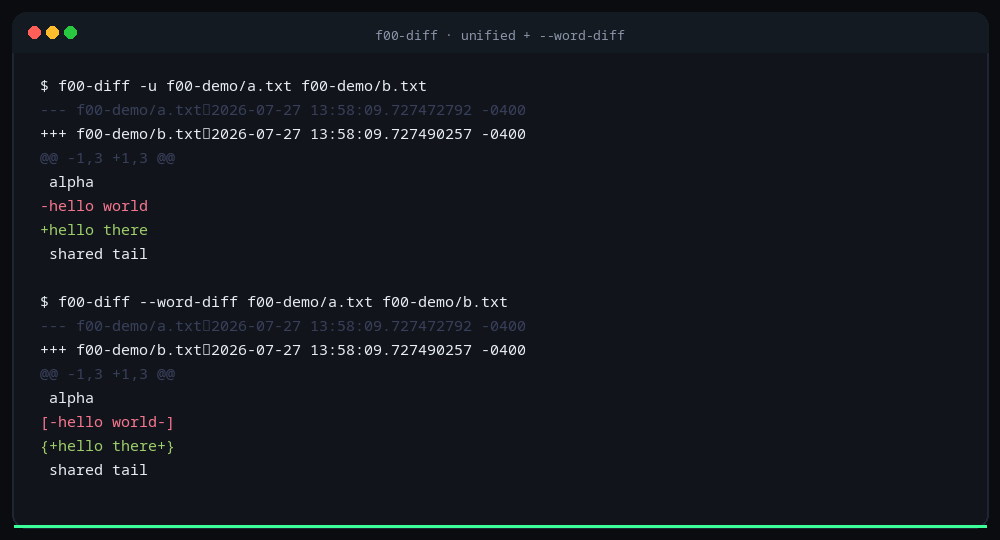
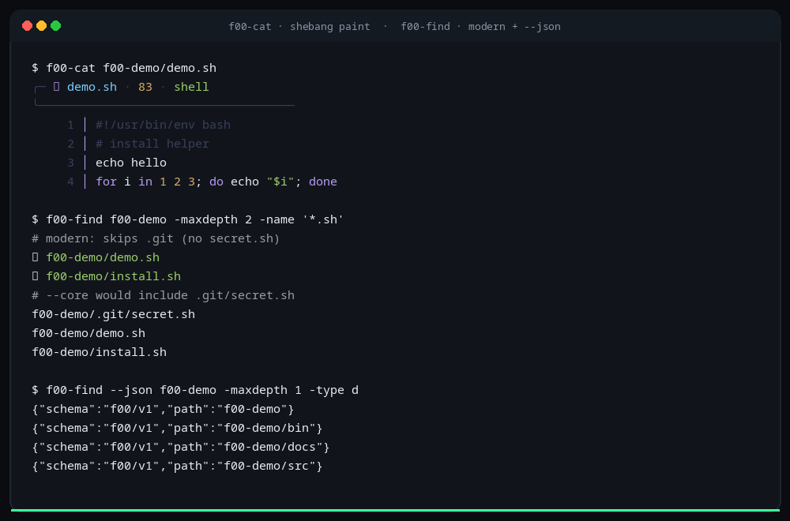
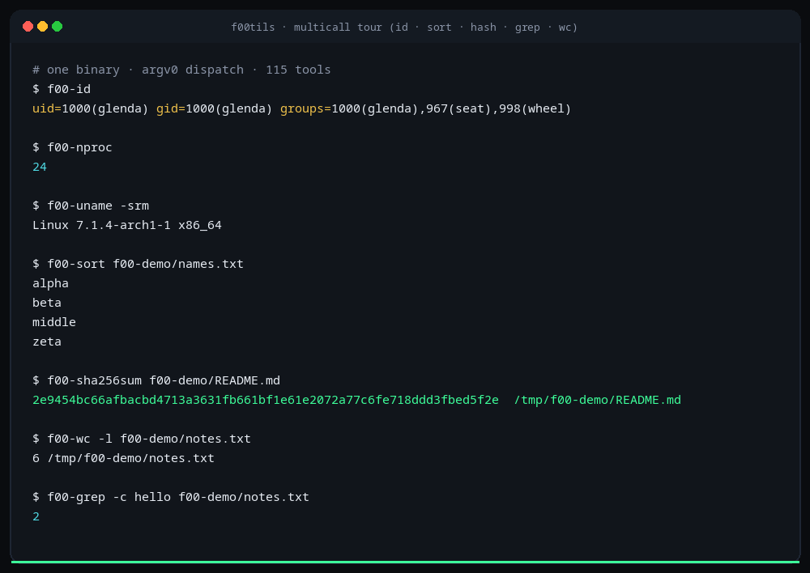

f00tils · pure ASM · multicall · MIT · v0.16.10
GNU userland, rebuilt
One freestanding multicall for coreutils, grep,
findutils, and diffutils (115 tools).
--core is GNU-identical and faster.
Default modern is the terminal you actually want.
$
curl -fsSL https://coreutils.f00.sh/install.sh | bash

Why it wins
--core — GNU clone
- Byte-identical to GNU (stdout, stderr, exit).
- Beats GNU on wall and CPU — separate metrics, per package.
- Use for CI, scripts, and true PATH drop-in (see below).
Modern — default
- Theme, truecolor, icons, chrome — not a pale GNU subset.
- Rich
--json/--csv, fd/rg/delta-class power where it fits. - Default for humans. Not auto-switched off just because a script ran.
Drop-in: --core is not auto-detected
A script, cron job, CI job, or pipe does not turn on --core.
Non-TTY only turns color/chrome off. Modern behavior can still differ
from GNU (example: modern find skips .git).
For GNU-identical drop-in, opt in explicitly:
- Per call:
tool --core … - Process tree:
export F00_CORE=1(same as--coreon every tool) - Config:
core = trueviaf00-config
Distro package installs bare names in /usr/bin (conflicts with
coreutils/findutils/grep/diffutils) — works in every session including TTY,
no PATH hacks. It does not set F00_CORE for you.

--core GNU-plain — explicit opt-in for scriptsFeature tour
Real color-terminal captures (forced PTY) of the shipped multicall — not one-liners for decoration. Regenerated every release.

ls -la —
modern long listing: glyph icons, type colors, owners, timestamps (not a pale GNU).

grep —
match chrome with line numbers, plus machine --json (schema: f00/v1).

diff —
themed unified hunks and delta-class --word-diff markers.

cat + find —
shebang paint for shell scripts; modern find skips .git (shown vs --core) and emits --json.

argv0 dispatch across the suite: id, nproc, uname, sort, sha256sum, wc, grep.
Benchmarks
f00-* --core vs GNU. Spawn-inclusive.
Totals per package. Wall and CPU separate.
Scoreboard
115/115 shipped · per-set speed vs GNU
—set geo
—% faster
—tools timed
—median
—best win
—runs
| # | tool | f00 | shipped | --core |
modern | GNU ms | f00 ms | wall · CPU |
|---|---|---|---|---|---|---|---|---|
| Loading… | ||||||||
Install
$
curl -fsSL https://coreutils.f00.sh/install.sh | bash
# pin
curl -fsSL https://coreutils.f00.sh/install.sh | F00_VERSION=v0.16.10 bash
# keep GNU bare names
curl -fsSL https://coreutils.f00.sh/install.sh | F00_SUPERSEDE=0 bash
# source
git clone https://github.com/theesfeld/f00tils.git
cd f00/asm && make && make install
f00 # config TUI
f00-config replace offLinux x86-64 · scoreboard · README
Documents
Operator SOP and formal release memo (NASA layout). Same PDFs attach to the GitHub Release for this version. Scene card ships as a Release asset only (not spotlighted here).